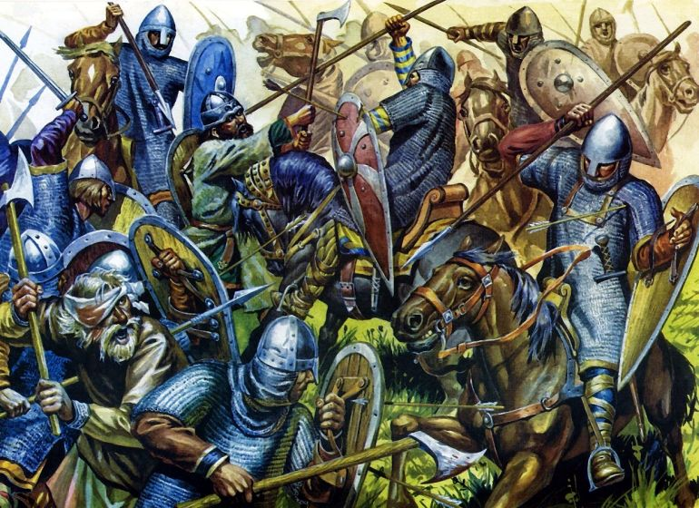
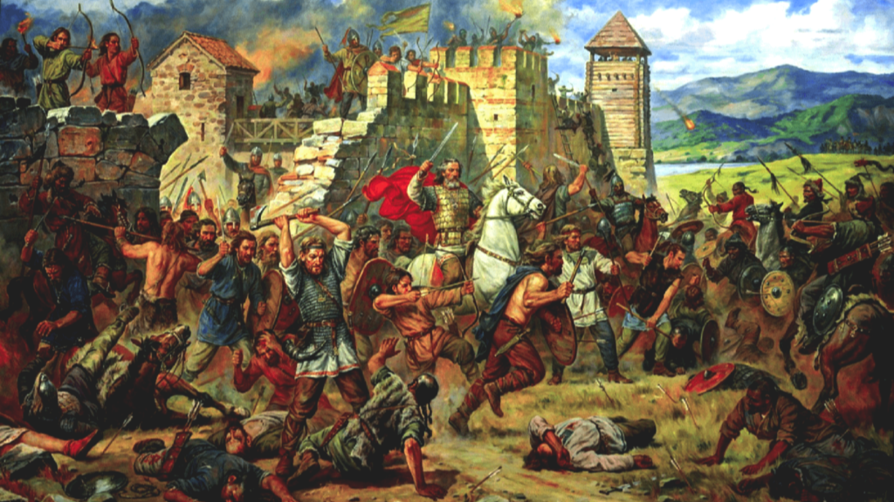
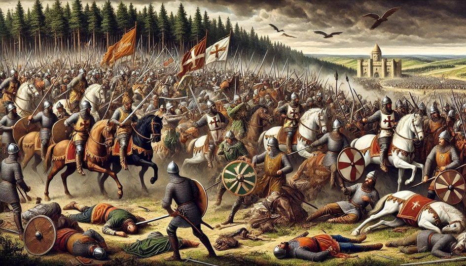
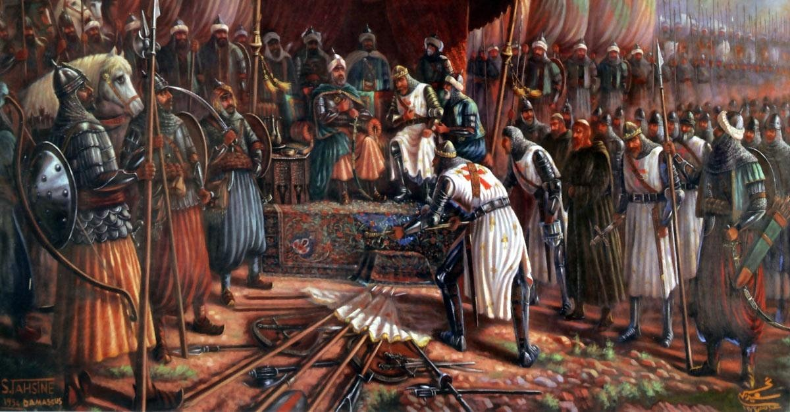
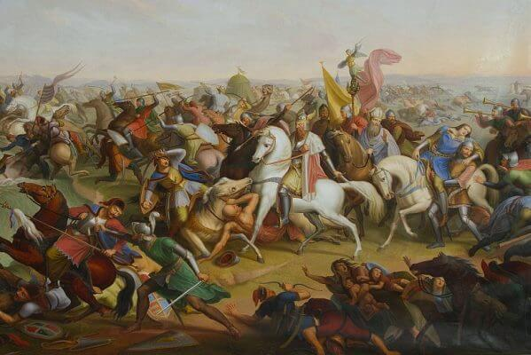
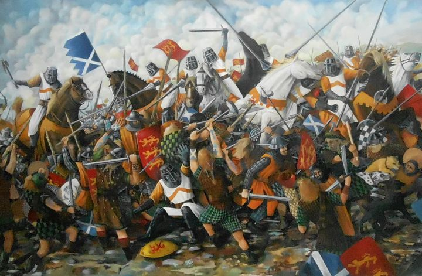
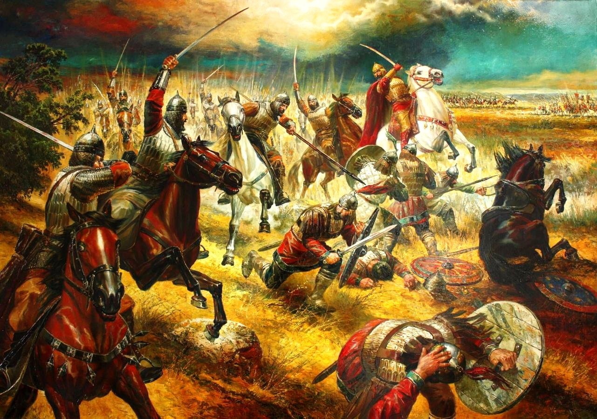
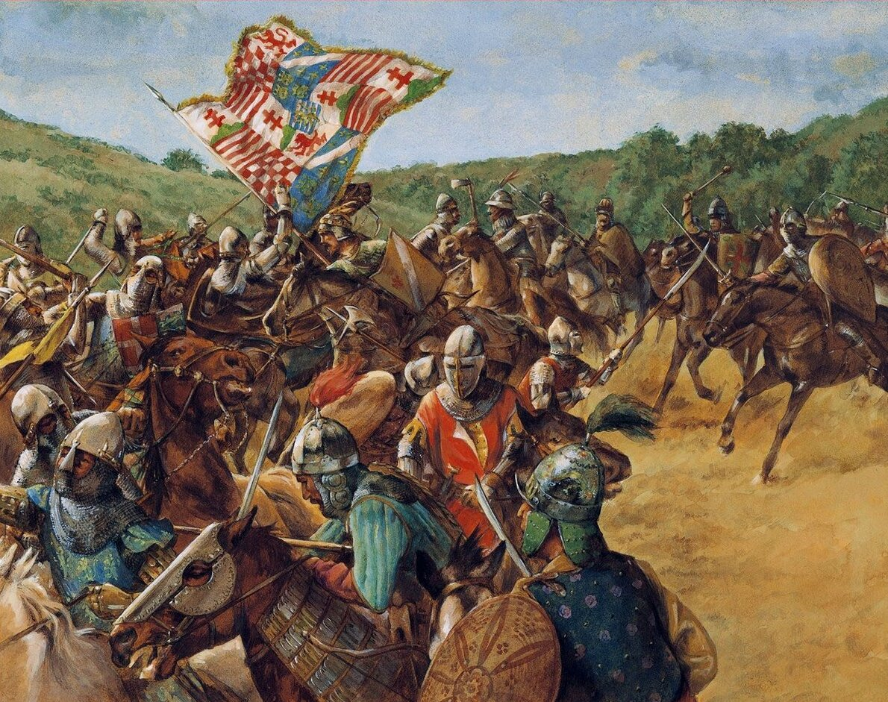
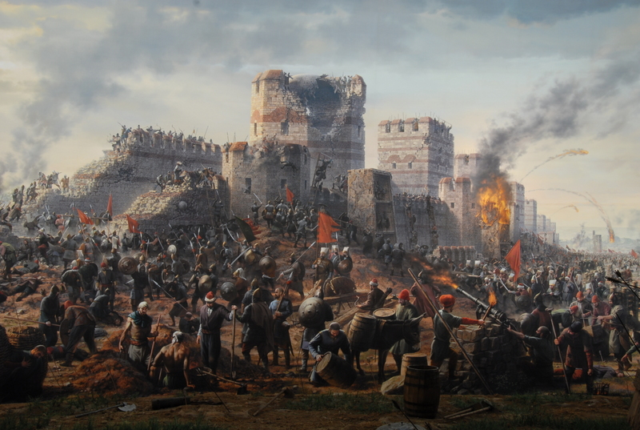

Batalla de Hastings (1066)
* La Batalla de Hastings, datada el 14 de octubre de 1066, fue un enfrentamiento decisivo entre el ejército anglosajón,liderado por el rey Harold II, y las fuerzas normandas comandadas por Guillermo el Conquistador. El duque Guillermo de Normandía cruzó el Canal de la Mancha decidido a reclamar el trono de Inglaterra, desatando una de las batallas más emblemáticas de la Edad Media.
⚔️ Ejércitos enfrentados:
- Normandos: Liderados por Guillermo el Conquistador, contaban con una fuerza combinada de infantería, arqueros y caballería pesada.
- Anglosajones: Bajo el mando del rey Harold II, su ejército se componía principalmente de infantería pesada, con los temidos "Huscarles" formando un sólido muro de escudos.
🛡️ Táctica decisiva:
Guillermo empleó una maniobra de engaño al fingir una retirada. Esto desorganizó las filas sajonas, que
abandonaron su posición defensiva para perseguir al enemigo. Aprovechando el caos, la caballería normanda
contraatacó con fuerza, desbordando a los anglosajones y asegurando la victoria normanda.
📜 Consecuencia histórica:
La victoria en Hastings marcó el inicio del dominio normando en Inglaterra. Esto transformó profundamente la
estructura política, lingüística y cultural del país, introduciendo el sistema feudal, nuevas leyes y una
élite gobernante de origen francés. El idioma inglés mismo comenzó una evolución significativa, influenciado
por el francés normando.
Batalla de los Campos Cataláunicos (451)
* La Batalla de los Campos Cataláunicos fue un decisivo enfrentamiento en el año 451 d.C. entre una coalición romano-visigoda, liderada por el general romano Flavio Aecio y el rey visigodo Teodorico I, contra los hunos comandados por Atila y sus aliados ostrogodos y gépidos.
⚔️ Ejércitos:
- Coalición: Imperio romano de Occidente y visigodos.
- Líderes: Flavio Aecio (Roma) y Teodorico I (Visigodos).
- Oponentes: Hunos con tribus aliadas como ostrogodos y gépidos, encabezados por Atila.
🛡️ Táctica clave:
El ejército de coalición utilizó una defensa escalonada en líneas múltiples con unidades de
refuerzo móviles. Mientras los romanos contenían el
avance huno en el centro, los visigodos cargaron contra el flanco izquierdo enemigo, desestabilizando la
ofensiva. Fue una estrategia basada en coordinación de aliados y contraataque lateral para
quebrar la superioridad numérica enemiga.
📜 Consecuencia histórica:
La retirada de Atila marcó el principio del fin de su amenaza en Europa occidental. Esta
victoria retrasó la
caída definitiva del Imperio romano de Occidente, consolidó a los visigodos como fuerza dominante en Hispania
y mostró la efectividad de alianzas entre pueblos antiguos frente a invasores externos.
Batalla de Poitiers (732)
* La Batalla de Poitiers, también conocida como la Batalla de Tours, tuvo lugar en el año 732. Fue un enfrentamiento decisivo entre las fuerzas del Reino Franco, comandadas por Carlos Martel, y el ejército musulmán omeya liderado por Abd al-Rahman al-Ghafiqi.
⚔️ Ejércitos:
- Francos: Dirigidos por Carlos Martel, líder de los francos y mayordomo de palacio, su ejército estaba compuesto principalmente por infantería ligera y algunas tropas de caballería.
- Omeyas: Liderados por Abd al-Rahman al-Ghafiqi, gobernador de al-Ándalus, poseía un contingente en el que predominaba la caballería a la infantería, menos usada por los musulmanes.
🛡️ Táctica clave:
Carlos Martel formó una línea de defensa compacta y en terreno elevado, usando infantería
pesada. Los ataques
de caballería omeya no lograron romper la formación franca. Un ataque sorpresa al campamento enemigo
desorganizó a los musulmanes y resultó en la muerte de su líder. Una estrategia basada en una
resistencia defensiva firme y buena posición
en el campo de batalla comparado con la del enemigo.
📜 Consecuencia histórica:
Esta victoria frenó la expansión islámica hacia Europa occidental. Carlos Martel ganó gran
prestigio, lo que
sentó las bases para la futura dinastía carolingia y el Imperio de Carlomagno. Fue considerada por muchos
cronistas medievales como un punto de inflexión para la cristiandad europea.
Batalla de Azincourt (1415)

* La Batalla de Azincourt fue un enfrentamiento crucial durante la Guerra de los cien años, ocurrida el 25 de octubre de 1415. El ejército inglés, liderado por el rey Enrique V, derrotó de forma contundente a una fuerza francesa comandados por varios tenientes, uno de ellos y el más importante Carlos I de Albret condestable de Francia, siendo numéricamente superiores en el norte del país.
⚔️ Ejércitos:
- Inglaterra: Rey Enrique V junto con su infantería y sus arqueros de largo alcance.
- Francia: Comandantes entre los que se encontraban, Carlos d'Albret, el mariscal Juan Le Maingre y el jefe de los ballesteros David de Rambures, además de otra gran cantidad de caballeros nobles.
🛡️ Táctica clave:
Los ingleses comenzaron con un uso estratégico de sus arqueros armados con arcos largos
(longbows), posicionados detrás de estacas
defensivas. El terreno fangoso y estrecho redujo la movilidad de la caballería pesada francesa, haciéndola
vulnerable al fuego de los arqueros y al combate cuerpo a cuerpo en condiciones adversas. Otra táctica crucial
fue el buen aprovechamiento del terreno,
con una gran disciplina y superioridad táctica inglesa sobre la caballería francesa.
📜 Consecuencia histórica:
La victoria inglesa consolidó la reputación de Enrique V como líder militar, debilitó la moral y estructura de
la nobleza francesa, y reforzó las aspiraciones inglesas sobre el trono de Francia. Además, marcó un
cambio en
el uso de la infantería frente a la caballería tradicional en la guerra medieval.
Caída de Acre (1291)
* El desastre para los cristianos de "La Caída de Acre" tuvo lugar el 28 de mayo de 1291 y marcó el fin del control cruzado sobre Tierra Santa. Fue un asedio decisivo en el que las fuerzas del sultanato mameluco, lideradas por el sultán Al-Ashraf Khalil, lograron tomar la ciudad de Acre, el último gran bastión cristiano en Oriente.
⚔️ Ejércitos enfrentados:
- Mamelucos: Bajo el mando del sultán Al-Ashraf Khalil, desplegaron un poderoso ejército con maquinaria de asedio avanzada y arqueros a caballo.
- Cruzados: Defensores provenientes de diversas órdenes militares (Templarios, Hospitalarios) como hombres mas importantes liderando el bando católico se encontraban Enrique II de Lusignan y el gran maestre del temple en ese momento Guillermo de Beaujeu entre otros, así como habitantes cristianos europeos de la ciudad.
🛡️ Táctica decisiva:
Los mamelucos asediaron intensamente las murallas con catapultas y torres de asedio.
A pesar de la resistencia feroz, lograron abrir brechas en las defensas y penetrar la ciudad.
La lucha fue brutal, con combates casa por casa, hasta que finalmente los cruzados fueron superados.
📜 Consecuencia histórica:
La pérdida de Acre significó el fin de las cruzadas en Tierra Santa.
Las órdenes militares se retiraron a Chipre y Europa, y el sueño de un reino cristiano en el Levante se desvaneció.
Acre pasó a estar bajo control musulmán, consolidando el dominio mameluco en la región durante los siglos siguientes.
Batalla de Grunwald (1410)

Batalla de Grunwald
La Batalla de Grunwald, produciéndose el 15 de julio de 1410, fue uno de los mayores enfrentamientos militares de la Europa medieval. En ella, la alianza entre el Reino de Polonia y el Gran Ducado de Lituania, liderada por el rey polaco Ladislao II Jagellón y el gran duque lituano Vitautas, derrotó al poderosísimo ejército del vigésimo sexto Gran maestre de la Orden Teutónica Ulrich von Jungingen.
⚔️ Ejércitos:
- Alianza: Reino de Polonia y Gran Ducado de Lituania.
- Líderes: Ladislao II Jagellón (Polonia) y Vitautas (Lituania).
- Oponentes: Orden Teutónica bajo el Gran Maestre Ulrich von Jungingen.
🛡️ Táctica clave:
La batalla se caracterizó por una inteligente coordinación de fuerzas múltiples. La retirada táctica inicial de la caballería lituana desorganizó a los caballeros teutónicos, quienes luego fueron flanqueados por fuerzas polacas. La superioridad numérica y la combinación de estilos de combate resultaron decisivas. Se hizo efectivo el uso de retirada simulada, flanqueo y desgaste progresivo del enemigo en campo abierto.
📜 Consecuencia histórica:
La derrota de la Orden Teutónica supuso el declive de su poder político y militar en Europa Central y Oriental. Fortaleció a la alianza polaco-lituana como potencia regional y abrió paso al surgimiento de nuevas estructuras estatales en Europa del Este.
Batalla de Lechfeld (955)
* La Batalla de Lechfeld, fechada el 10 de agosto del año 955, fue un enfrentamiento crucial entre el ejército germánico comandado por el Rey Otón I y las incursiones húngaras del jefe tribal Bulcsú que asolaban Europa central desde hacía décadas. Cerca de la ciudad de Augsburgo, Otón logró reunir fuerzas de distintos ducados germanos para detener una invasión húngara que amenazaba la estabilidad del reino.
⚔️ Ejércitos enfrentados:
- Germánicos: Bajo el liderazgo de Otón I el Grande, el ejército estaba formado por contingentes de Sajonia, Baviera, Franconia y Suabia. Su fuerza principal residía en la caballería pesada, entrenada para el combate directo y disciplinado.
- Húngaros (Magiares): Un ejército móvil y ágil, liderado por el húngaro Bulcsú cuyos soldados eran jinetes arqueros nómadas, expertos en emboscadas y ataques relámpago. Su líder y lugartenientes confiaban en tácticas de desgaste y engaño para derrotar a sus enemigos.
🛡️ Táctica clave:
Otón I evitó caer en la trampa habitual de los magiares: la retirada fingida. Mantuvo la cohesión de sus tropas y los enfrentó con disciplina. Cuando los húngaros comenzaron a saquear el campamento imperial, Otón lanzó un ataque envolvente bien coordinado, aprovechando el momento de desorganización del enemigo. La superioridad de la caballería pesada germánica resultó decisiva, logrando una victoria aplastante.
📜 Consecuencia histórica:
La victoria en Lechfeld puso fin a las incursiones húngaras en Europa occidental. Esta batalla consolidó el poder de Otón I, quien más tarde sería coronado como Emperador del Sacro Imperio Romano Germánico en 962. Además, obligó a los magiares a abandonar su estilo de vida nómada, permitiendo la fundación del Reino de Hungría y su posterior cristianización.
Batalla del Puente de Stirling (1066)
* La Batalla del Puente de Stirling, sucedió el 11 de septiembre de 1297, fue un enfrentamiento crucial entre las fuerzas escocesas rebeldes, lideradas por William Wallace y Andrew de Moray, en el lado opuesto aguardaba el ejército inglés comandado por John de Warenne, conde de Surrey y Hugh de Cressingham tesorero inglés de la administración escocesa y a su vez asesor del conde. Este combate se convirtió en uno de los primeros grandes triunfos escoceses durante las Guerras de Independencia de Escocia.
⚔️ Ejércitos enfrentados:
- Ingleses: Bajo el mando de John de Warenne y Hugh de Cressingham, contaban con una fuerza numéricamente superior, formada por caballería pesada e infantería bien equipada.
- Escoceses: Liderados por Wallace y Moray, los escoceses disponían de un ejército más reducido, compuesto en su mayoría por infantería ligera, campesinos y lanceros con gran conocimiento del terreno.
🛡️ Táctica decisiva:
Los ingleses intentaron cruzar el estrecho puente de Stirling sobre el río Forth. Wallace y Moray esperaron pacientemente hasta que solo una parte del ejército enemigo lo hubiera cruzado. En ese momento, lanzaron un ataque fulminante sobre los soldados ingleses atrapados entre el puente y el río. El puente fue destruido, impidiendo refuerzos y dejando a muchos ingleses sin ruta de escape. El resultado fue una derrota aplastante para los invasores.
📜 Consecuencia histórica:
La victoria en Stirling impulsó el liderazgo de William Wallace, quien fue nombrado Guardián de Escocia. La batalla demostró que una fuerza motivada y estratégicamente inteligente podía derrotar a un enemigo más grande y mejor armado. Este triunfo inspiró la resistencia escocesa y consolidó el mito heroico de Wallace como símbolo de la lucha por la independencia de Escocia.
Batalla de Aqueloo (917)
* La Batalla de Aqueloo, cuya fecha se remonta al 20 de agosto del año 917, fue uno de los mayores enfrentamientos entre el Primer Imperio Búlgaro y el Imperio Bizantino. Tuvo lugar cerca del río Aqueloo (situado sobre la costa del Mar Negro, cerca de la fortaleza búlgara de Tuthom, que es actualmente la ciudad de Pomorie) y fue una victoria decisiva para los búlgaros, bajo el mando del zar Simeón I "el Grande", consolidando su hegemonía en los Balcanes. Según las fuentes, fue la batalla más grande y sangrienta de la época medieval conocida como la "Batalla del Siglo.
⚔️ Ejércitos:
- Búlgaros: Dirigidos por el zar Simeón I, con tropas pesadas y competente caballería, siendo mucho más inferiores en número que sus oponentes
- Bizantinos: Liderados por el doméstico "Escolae" León Focas, compuestos por infantería regular, caballería y unidades élite de Constantinopla.
🛡️ Táctica clave:
Simeón I usó una estrategia envolvente, atrayendo al ejército bizantino a una posición expuesta cerca del río. Tras un aparente retroceso búlgaro, lanzó un ataque en pinza con su caballería de reserva desde los flancos. La sorpresa y el terreno difícil contribuyeron a una derrota catastrófica para los bizantinos, que perdieron la mayor parte de su ejército.
📜 Consecuencia histórica:
La victoria búlgara consolidó el poder de Simeón I como el gobernante más influyente de los Balcanes. El Imperio Bizantino sufrió un fuerte revés político y militar, y el equilibrio regional se inclinó a favor de Bulgaria. Esta batalla marcó el apogeo del Primer Imperio Búlgaro y la ambición de Simeón de proclamarse emperador de los romanos.
Batalla de Nicópolis (1396)
* La Batalla de Nicópolis, librada el 25 de septiembre de 1396, fue uno de los últimos grandes esfuerzos de cruzada en la Edad Media y un intento por frenar el avance del Imperio Otomano en Europa. La batalla tuvo lugar cerca de la ciudad de Nicópolis, a orillas del Danubio, en la actual Bulgaria.
⚔️ Ejércitos:
- Cristianos: Una coalición de fuerzas lideradas por Segismundo de Hungría, con la participación de caballeros franceses, borgoñones, alemanes y otros cruzados occidentales de varios territorios aún cristianos.
- Otomanos: Bajo el mando del sultán Bayezid I apodado y conocido como “el Rayo”, con apoyo de tropas serbias dirigidas por el Rey Esteban Lazarević.
🛡️ Táctica clave:
El ejército cruzado, confiado en su superioridad caballeresca, atacó prematuramente sin esperar a las fuerzas húngaras. Los otomanos resistieron el embate inicial y luego lanzaron una contraofensiva. La caballería pesada cristiana se vió rodeada y atrapada en un enjambre, por lo que la mayoria fue aniquilada o capturada tras la llegada de las reservas otomanas.
📜 Consecuencia histórica:
La derrota fue devastadora para Europa occidental y consolidó el poder osmanlí en los Balcanes. Muchos nobles europeos murieron o fueron tomados prisioneros. La batalla dejó clara la eficacia militar otomana y desalentó futuras cruzadas contra ellos durante décadas.
Caída de Constantinopla (1453)
La Caída de Constantinopla, ocurrió el 29 de mayo de 1453, marcando el fin del Imperio Bizantino y el ascenso al poder en el medievo del Imperio Otomano, convirtiéndose en una de las principales potencias del mundo. La ciudad fue sitiada por el sultán otomano Mehmed II, quien tras semanas de asedio (concretamente 7 semanas y 5 días), logró tomar la capital bizantina, poniendo fin a más de mil años de historia imperial romana en Oriente.
⚔️ Ejércitos:
- Otomanos: Dirigidos por Mehmed II, contaba con un enorme plantel de soldados que incluía jenízaros, infantería regular y poderosa artillería.
- Bizantinos: Defendiendo el asedio de la gran ciudad, se encontraba Constantino XI Paleólogo, el cual tras esta batalla sería el último emperador de la dinastía romana de Occidente, apoyado por un contingente reducido de caballeros bizantinos y mercenarios genoveses liderados por Giovanni Giustiniani.
🛡️ Táctica clave:
El asedio otomano combinó el uso de un gran número de cañones para debilitar las murallas con ataques coordinados en múltiples frentes. La baja de Giustiniani que marchó herido, desmoralizó a los defensores, y la ruptura de las defensas por la Puerta de San Romano las más débil de Constantinopla, permitió la entrada de los otomanos.
📜 Consecuencia histórica:
La toma de Constantinopla marcó el fin de la Edad Media y la consolidación del Imperio Otomano como potencia dominante. La ciudad fue renombrada Estambul y se convirtió en un nuevo centro político, cultural y religioso del islam. En Europa, el evento provocó conmoción y una ola migratoria de eruditos hacia Occidente, influyendo en el Renacimiento.